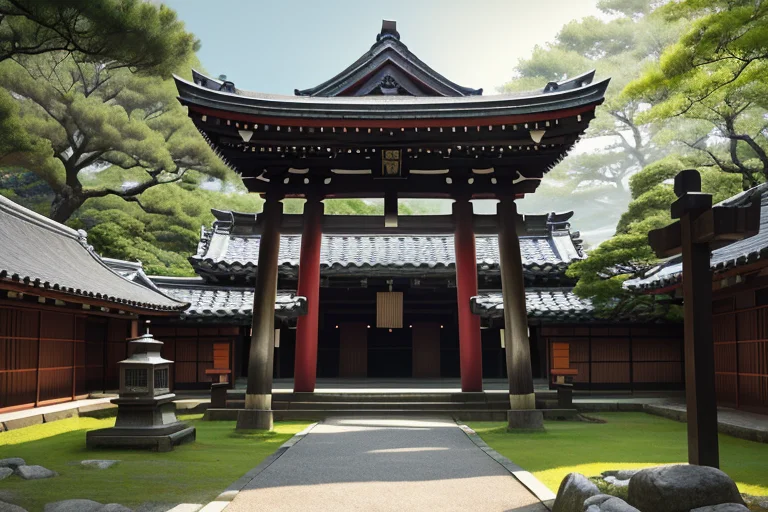
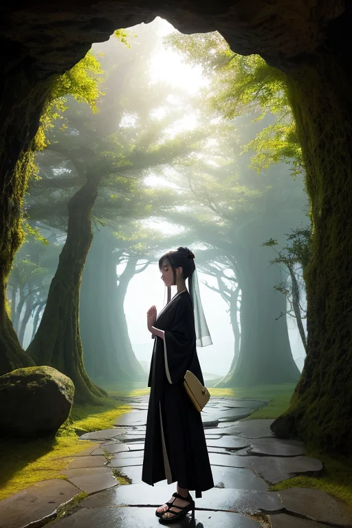
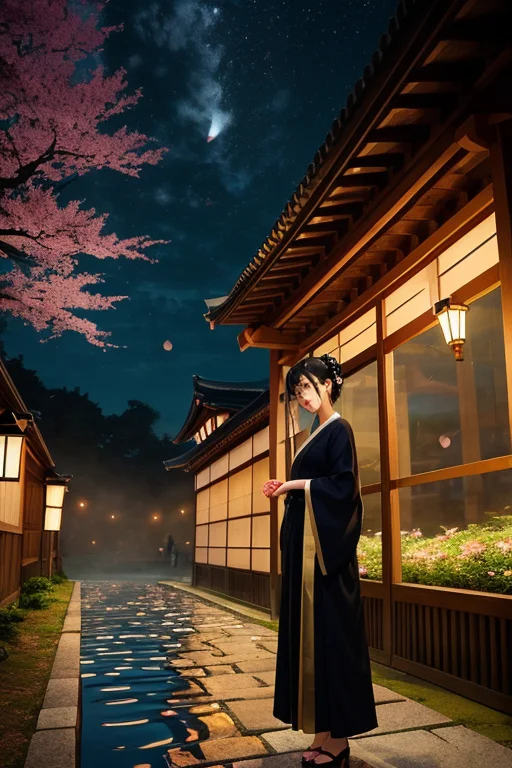
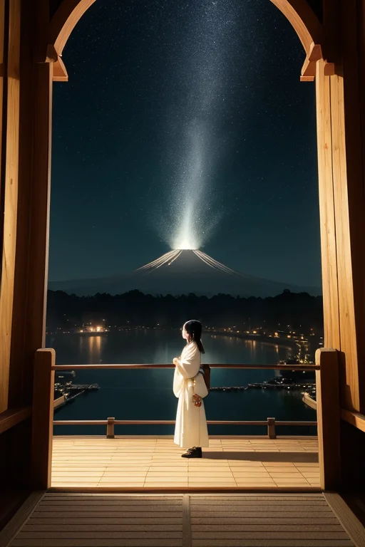

第一章 現実の福岡
あなたはまだ気づいていない。この土地にも、王がいることを。
太宰府天満宮の参道は、午後の仄かな光に包まれていた。梅の季節は過ぎ、深い緑が静けさを増す。訪れる人々のざわめきは、石畳を伝い、やがて本殿前の空間で吸い込まれるように消える。ここは祈りが積もった場所だ。受験生の願い、旅人の無事、商人の繁栄。幾層もの「外へ向かう意志」が、この空気を重く、そして透明にしている。
その静寂の底で、王は立っていた。黒と金の紋章が、彼の胸に微かに光る。フクオカリア・ゲートウェイ。彼は目を閉じ、地の底から伝わる「歪み」の脈動を聴いていた。九州の西端、大陸への玄関口。この土地は、常に外からの衝撃と内からの野心の、微妙な均衡点にある。元寇という巨大な歪みがこの海を震わせた時も、王たちは波を数秒遅らせ、風向きをほんの少し変え、壊滅を回避へと調整した。英雄ではない。ただの調整者だ。
参拝客が賽銭を投げる音が、かすかに響く。王はそっと目を開けた。

第二章 歪みの兆候
太宰府天満宮の参道を、春の風がそっと通り抜ける。梅の香りと共に、無数の祈願が木々の間に絡まり、微かな光の塵のように漂っていた。フクオカリア・ゲートウェイはその「祈りの密度」を感じ取る。通常、それは安定した流れだ。願いが生まれ、天へと昇り、やがて拡散する。しかし今、その流れに乱れがある。ある一点から発せられる祈りが、鋭く、深く、地中へと突き刺さるように沈み込んでいる。それは「外へ出たい」という、強いがゆえに歪んだ野心の形だった。
王はそっと手のひらを地面にかざした。地脈を伝い、志賀島の沖合いへと意識を伸ばす。海底の岩盤に、目には見えないひびが走り始めている。祈りの歪みが、物理的な歪みを呼び覚まそうとしている。彼はため息をつく。感情らしきものが胸をよぎる。この祈りの主は、外へ出る「覚悟」を、単なる勢いと誤解している。覚悟とは、引き返せないと知った上での一歩だ。彼は微調整を始める。祈りのエネルギーのベクトルを、ほんの少し、水平方向へと修正する。壊すのではない。流れを整えるだけだ。
第三章「王の葛藤」
門司港レトロの静かな倉庫街。玄関王は、古い煉瓦壁に背を預け、目を閉じていた。沖合いの祈りを調整した後、彼の内側に異物が残っている。それは「葛藤」という名の感情だった。本来、彼は門を開け、流れを整えるだけの存在だ。外へ出たいという野心に、自らが共鳴していることに気づいた。博多の商人たちの活気、山笠の男たちの熱気、それらは全て「外」への欲望の表れだ。彼はその欲望を調整するためにここにいる。しかし、その欲望の奔流が、時に彼自身を内側から揺さぶる。
「覚悟とは何か」
彼は自問する。元寇の時、この地は外からの衝撃に晒された。その時、人々は何を覚悟したのか。防ぐことではなく、受け止め、なお前に出ることを選んだのではないか。彼は微調整者だ。巨大な歪みを消すことはできない。できるのは、ほんの少し、衝撃を和らげ、ほんの少し、逃げる時間を稼ぐことだけだ。それでも、その「ほんの少し」が、覚悟を決める一歩を支える。彼の内側に湧く共鳴、それは彼がこの地の「感情」に侵食され始めている証だった。王は静かに息を吐く。黒と金の紋章が、彼の胸の奥で微かに脈打つ。

第四章 妖精との対話
太宰府天満宮の静寂に、ゲートリアの声は祈りのように溶け込んだ。「王よ、覚悟とは、魂の均衡です」と彼女は言う。参道の石畳に足音を消し、梅の枝が風に揺れる。ここは、かつて都を追われた貴族が、学問の神として祀り直した地だ。外へ出るとは、時に追放に等しい。それでも、魂の拠り所を内に築く者が、真に門を開ける。
「人流は心の流れ。乱れは、不安の波です」とハカタリアが中洲の川面を指さす。屋台の灯りが水に揺らめき、笑い声が行き交う。彼女たちは、その雑踏の一つ一つの隙間を、見えない糸で繕っている。押し合う人々の肩が、ほんの少し優しく擦れ違うように。焦燥が、ほんの少し和らぐように。それは巨大な災いを防ぐものではない。ただ、人が明日もまたこの街を歩こうと思える、かすかな安心の基盤だ。
王は黙って聞く。野心とは、この微調整の積み重ねの果てにあるものなのか。外へ出る覚悟とは、この地の感情の密度に耐え、なお調整を続ける意志なのか。黒と金の紋章は、静かな決意を温めていた。

第五章 微調整と余韻
太宰府天満宮の静寂は、祈りという名の精神波で満ちていた。王はその波紋の中心に立ち、目を閉じる。歪みは物理的なものだけではない。不安、焦り、絶望。それらが蓄積する感情の歪みも、この列島を揺らす。王は自らの内に芽生えた感情——挑戦心——を静かなフィルターとし、流れ込む祈りの波を微調整する。激しい願いはほんの少し柔らぎ、諦めに傾く心にはかすかな希望のきらめきを添える。それは救済ではない。ただ、人が次の一歩を踏み出すための、心の地面の整地だ。
門司港レトロの海風が、黒と金の紋章を撫でる。外へ出る覚悟とは何か。王は今、知った。それはこの地のすべての感情——その重さ、熱さ、切なさ——を引き受け、なお、微調整という静かな使命を果たし続けること。巨大な野心などない。あるのは、今日も博多の街を流れる人波が、ほんの少しだけ優しい偶然に包まれるように、という不断の意志だけだ。
夜の帳が下り、志賀島の沖に星がまたたく。王の調整は終わらない。それは、この国が息づく限り、続く祈りのようなものだ。
あなたの町にも、王がいる。